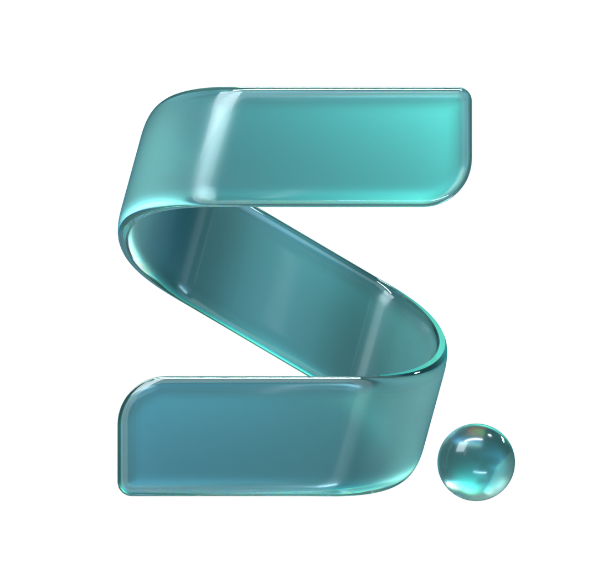
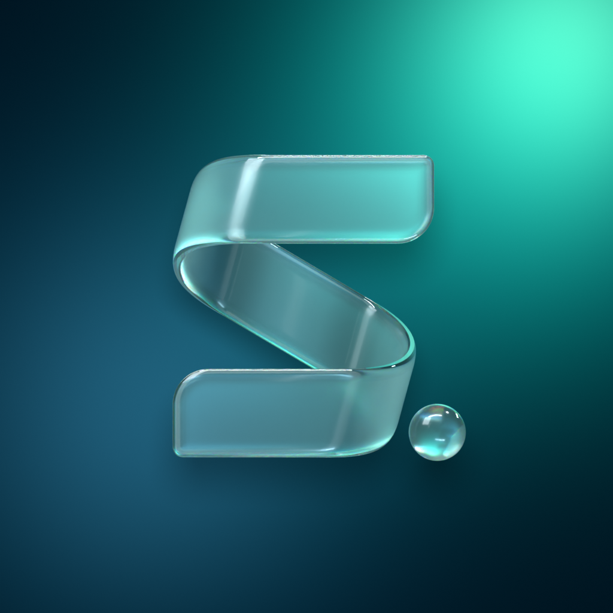
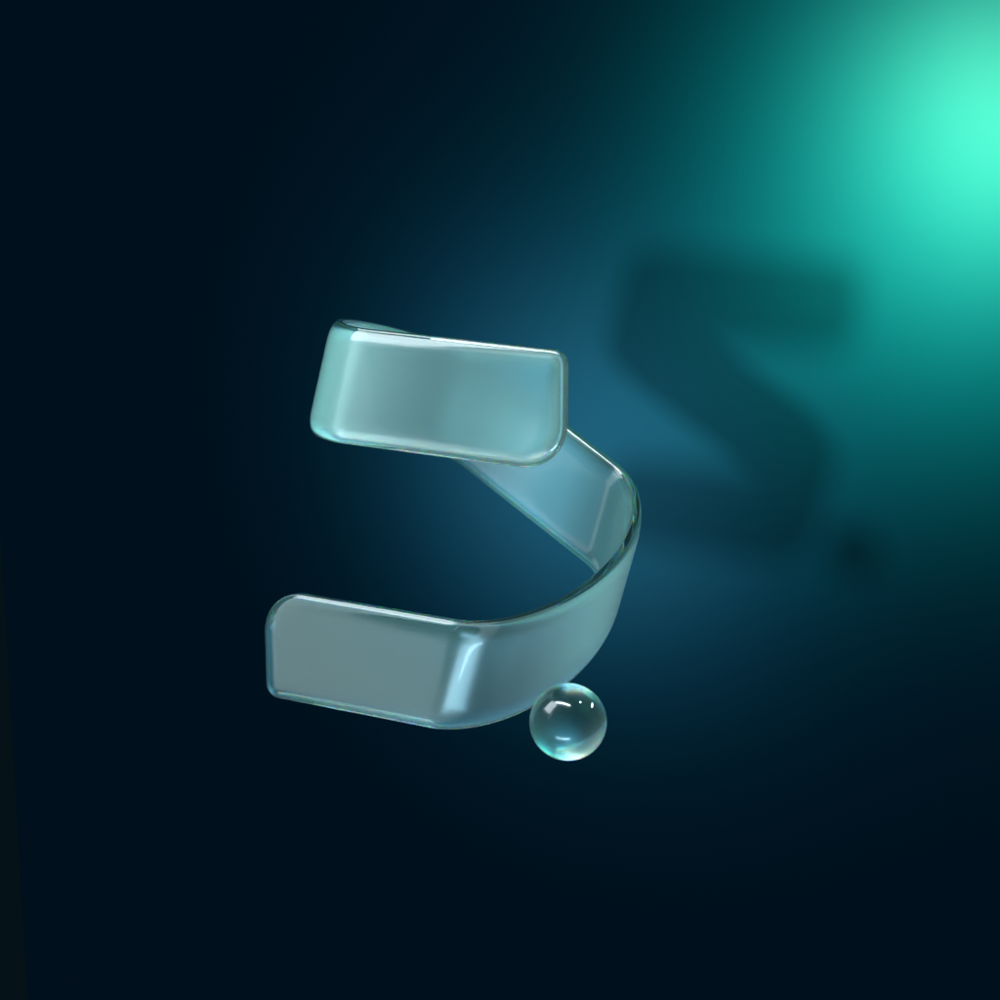

Liquid glass : surface polie, cœur dépoli, bords en lentille.
Vue live en three.js de skilli-logo.glb sur le halo du site. La v3 garde la forme de la v2 (plis ronds, verre épais) : le cœur du ruban floute le halo comme un verre dépoli, les bords en lentille restent nets et brillants, la surface est polie. Les v2 et v1 restent disponibles avec les boutons. Bougez la souris ou glissez le doigt pour incliner le ruban.
Chargement de la scène 3D…
À plat, fond transparent (v3)
skilli-mark@2x.png (1080 × 1056) et skilli-mark.png (540 × 528) : même cadre que ribbon-glass.svg (viewBox 270 × 264), donc ils le remplacent tels quels sur le site. Le verre garde la réfraction du halo ; l’ombre portée reste celle du CSS du site.

Rendus Blender (Cycles), v3




Fichiers dans le dépôt
| Fichier | Pour quoi |
|---|---|
assets/brand/3d/skilli-logo.glb | three.js : ruban + sphère, dégradé de pli (COLOR_0), position du reflet en extras, verre glTF. |
assets/brand/3d/studio-env.hdr | Éclairage du studio pour scene.environment. |
assets/brand/3d/viewer.html | Intégration de référence (recette du site dans la transmission). |
assets/brand/3d/skilli-mark@2x.png | Plat, transparent, remplace ribbon-glass.svg. |
assets/brand/3d/skilli-logo.blend | La scène Blender complète, pour les animations. |
assets/brand/3d/versions/v1/, v2/ | Les versions figées, complètes (tags git brand-3d-v1, brand-3d-v2). |